Playing with Fire · Stories around the fire
Chapter I · The gathering

Long before anyone wrote, people sat around a fire and told stories.
Fire was our first technology.
Tonight we talk about what might be the latest one.
Who's telling the stories tonight

Farm kid, winery, wine engineer, public administration.

And yet
41 repositories
One tile per repository.
I'm not a developer. My day job is in public administration, not in IT. What I am is a translator: I know what the problem feels like, and I've learnt to explain it to a machine.

The trail of the evening
Eight camps, one evening
A spark, kindling, a camp of many fires, smoke, embers.
Three promises
By the last ember, you'll …
Know the words
Tokens, agents, MCP, pull requests. Explained with booths and showrooms, not maths.
See real things
Built by a non-developer, including a tool built for VAVE, and how it came to be.
Keep the rules
Fireplace rules, so nobody gets burnt.
Sticks for the fire
Questions keep it burning
Throw one in any time, as a bubble on the board.
The invite link on the board works without an account.